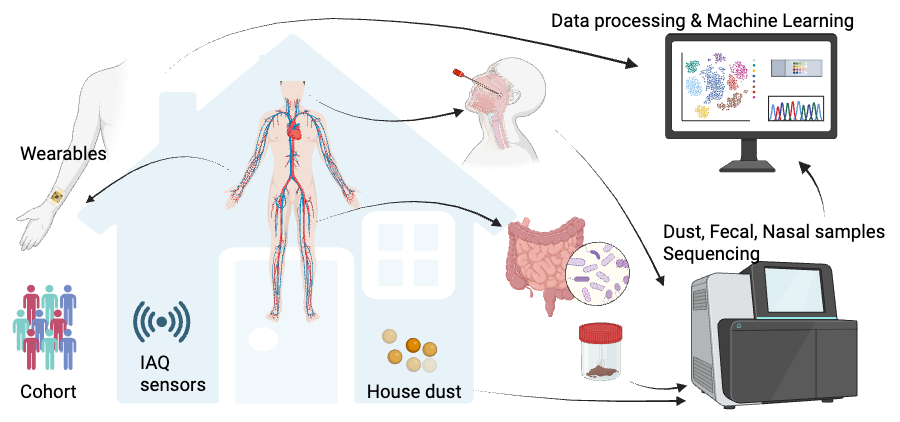

— Croatia · HRZZ · 2026–2029
Integrated assessment of indoor air, environmental microbiome, behavior, and human health. An installation research project, started in October 2026, that establishes the lab's own holobiont-focused research group.
Adults spend most of their time indoors, yet indoor air quality, the indoor microbiome, and human physiology are usually studied in isolation. Holobiomics Lab brings them together through the concept of the human holobiont: a person and their microbes as one interacting system. The project combines continuous bedroom air monitoring, profiling of house dust, nasal, and gut microbiomes, wearable measures of autonomic function and sleep, daily dietary records, and outdoor exposure in a longitudinal intervention study. It tests whether poor ventilation affects autonomic regulation, whether indoor and human microbiomes share core taxa, and whether simple behavioral changes, such as structured ventilation and more time outdoors, shift both. Interpretable machine learning and compositional statistics will integrate these data streams to identify modifiable pathways between the built environment and health. Protocols, data, and code will be shared openly following FAIR principles. The project also establishes a dedicated holobiomics research group at the Institute for Anthropological Research.

Elevated CO₂ and reduced ventilation impair autonomic regulation, measured through beat-to-beat heart intervals.
Indoor dust and host-associated microbiomes share core taxa, consistent with microbial exchange or shared ecological selection.
Ventilation and outdoor-time interventions shift both environmental and host-associated microbiome profiles.
Principal Investigator
Scientific coordination and study design; computational lead for interpretable machine learning, multi-stream data integration, and sensors.
ORCID ↗Postdoctoral Researcher
Microbiome lead: sampling, DNA extraction, 16S sequencing design, contamination control, and bioinformatic processing.
ORCID ↗Doctoral Candidate
Field sampling, laboratory processing (DNA extraction, library preparation), metadata harmonization, and data quality control.
ORCID ↗Doctoral Candidate
Indoor air sensor deployment and calibration; wearable data preprocessing and heart rate variability features.
ORCID ↗Scientific advisors
At least five gold open-access papers, starting with a study protocol paper published before data collection.
Evidence briefs on bedroom ventilation and indoor health for public health and building stakeholders.
Doctoral theses in microbiome bioinformatics, wearable data science, and multi-modal data integration.
Hypotheses and the full analysis plan are registered before data collection, followed by a published study protocol.
Sequencing data in ENA; indoor air and wearable time series in Zenodo; analysis code on GitHub with a DOI.
A standard operating procedure package for integrated indoor health studies and a validated analysis pipeline.